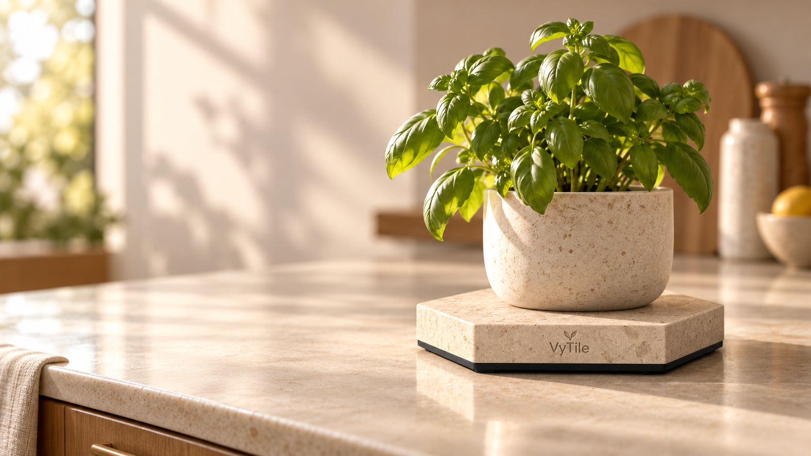
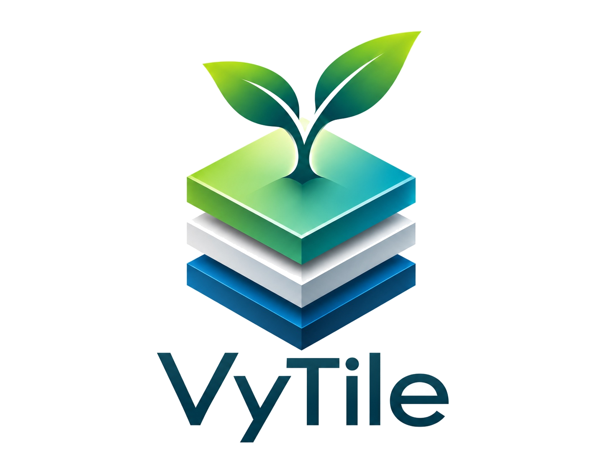
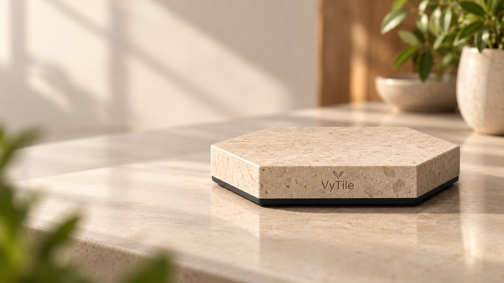
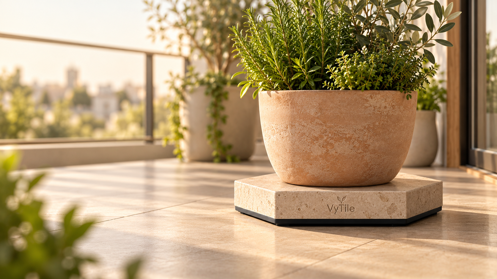
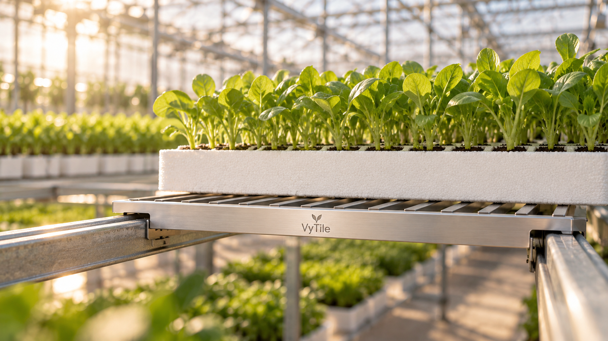

Notice the watering.
A rise in weight records water added to the pot.
VyTile + the Sykerbos app
A connected scale beneath your pot. VyTile tracks weight and temperature over time. Sykerbos turns those readings into a picture of watering, drying and your plant’s changing patterns.
Explore sample plants. No account or VyTile needed.
In development · Hardware shown is a design concept.

The app where your measurements become a plant story.
See a sample plant story →Why weigh a plant?
A pot gets heavier when you water it, then lighter as water leaves through the plant and evaporation. Following that change over time reveals more than a single reading.
A rise in weight records water added to the pot.
The falling curve shows how quickly the pot is losing water.
Repeated cycles help build a reference for that plant. Watering predictions are being developed from these patterns.
Fits around your plant
The scale measures the whole pot from underneath.
Weight and temperature readings build a history between your visits.
Follow the trends, compare cycles and learn what changes for your plant.
Meet the app
Open a sample garden, follow a weight curve and discover the plants behind the readings.
Try Sykerbos as a guest →Three sample plants · Simulated readings · No account required
Hardware in development

We’re developing VyTile first through working prototypes. These design concepts explore how the same sensing idea could fit home plants, larger pots and commercial growing.

Compact sensing for herbs, houseplants and smaller pots.
Home · single plantPlant intelligence designed to disappear naturally into the home.
Home · connected collection
A larger format for outdoor pots and balcony growing, up to about 30 cm across.
Outdoor · larger pots
Representative gravimetric sensing points for nurseries, trials and production systems.
Commercial · concept hardwareSykerbos Herbarium
Collect beautiful plant dossiers, learn the biology behind each species, and build a record of the plants you grow.
Explore the Herbarium →What’s growing
Follow what is available now, what we are building next, and what we are exploring for later.
Working prototypes collect weight and temperature. The public demo uses simulated readings.
Develop watering guidance from plant histories and milestones from observed cycles.
Plant suggestions matched to your habitat and observed care patterns.
A competitive plant card game built from biologically grounded traits, with ranked play, leaderboards, coveted rewards and limited custom VyTile shell designs.
Start with a sample plant
Explore the demo today while we keep developing VyTile.